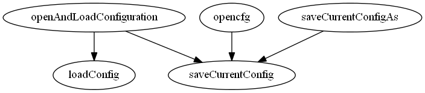

Master index
Index for Imaging\io\file_io\configurations
Dependency Graph for Imaging\io\file_io\configurations

Generated on Thu 19-Apr-2012 16:54:56 by
m2html
© 2005
 Master index
Master index Master index
Master index